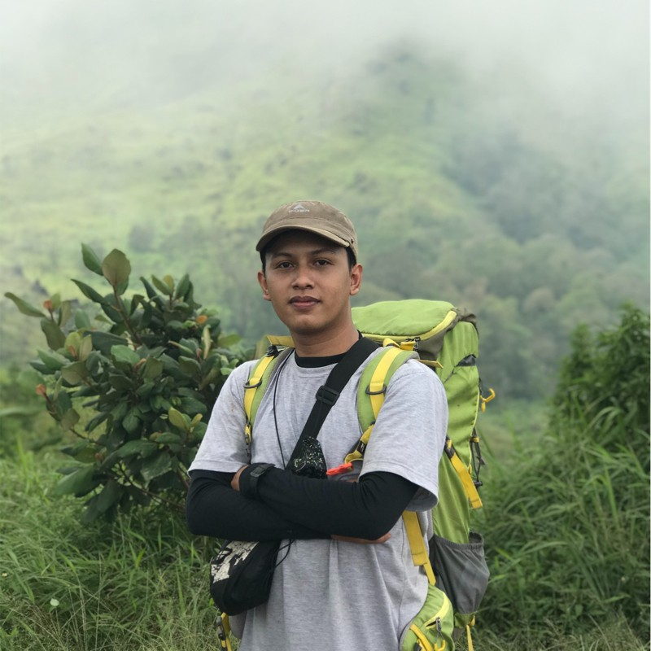

Senior Software Quality Assurance Engineer & Developer dengan pengalaman 4+ tahun. Memiliki keahlian teknis ganda dalam AI-Assisted Software Testing & Automation serta pengembangan web modern menggunakan Node.js, Next.js, Express, dan REST API.
Tahun Pengalaman
Tahun Testing Automation
Kualitas & Kode Clean

Senior SQA Engineer & Fullstack Developer
Kombinasi mendalam antara efisiensi alur kerja pengujian berbasis Generative AI dan pemahaman arsitektur aplikasi modern.
Menerapkan Prompt Engineering & Generative AI Scripting (Copilot, ChatGPT, Claude) untuk mempercepat pembuatan Test Scenario, Edge Cases, Test Case otomatis, serta otomatisasi skrip Robot Framework dan validasi API di Postman.
Latar belakang kuat sebagai Fullstack Developer (Node.js, Express, Next.js, React) memberikan kemampuan analisis bug hingga tingkat backend/frontend dan pemahaman arsitektur RESTful API yang mendalam.
Berpengalaman 3+ tahun dalam pengujian skala besar untuk Web Admin Panel, Mobile Apps, dan REST API menggunakan Robot Framework, Katalon Studio, Selenium, dan Postman dalam ekosistem Agile/Scrum.
Aktif dalam seluruh siklus pengembangan produk Agile/Scrum (Backlog Grooming, Sprint Planning, Daily Scrum, Sprint Review, dan Retrospective) di industri Fintech dan Media Skala Besar.
Stack lengkap yang digunakan untuk membangun dan menguji perangkat lunak berkualitas tinggi.
Pengalaman dalam pengujian perangkat lunak skala enterprise dan pengembangan sistem modern.
Kumpulan proyek pengembangan sistem dan arsitektur pengujian otomatis.
Mengembangkan berbagai platform web modern berkinerja tinggi menggunakan stack Next.js & Node.js, menerapkan Server-Side Rendering (SSR), arsitektur modular, dan integrasi API yang aman.
Mengembangkan aplikasi web desktop pemantauan data pasar dan aplikasi mobile sales tracking secara real-time untuk PT Sinergi Informatika Semen Indonesia (SISI).
Tugas Akhir Kuliah UISI - Mengembangkan sistem pemesanan kafe berbasis Mobile (Unity 3D & Augmented Reality) dan Dashboard Website Admin untuk pengelolaan pesanan real-time.
Merancang dan mengimplementasikan kerangka otomatisasi pengujian berbasis Robot Framework & Katalon Studio untuk pengujian Web Admin, Mobile Apps (Amartha Plus, Riliv), dan REST API.
Usaha toko & retail kreatif terpercaya yang didirikan oleh M Irfan Arisaldy. Menyediakan produk pilihan berkualitas tinggi dengan pelayanan terpercaya.
Pendidikan formal dan pengalaman magang di instansi serta BUMN.
Sarjana Komputer (S.Kom.), Teknik Informatika | Lulus 2019
Rekayasa Perangkat Lunak (RPL) | Lulus 2015
Administrator & Analyst System (Magang)
Pengelolaan sistem administrasi dan analisis data sistem bea dan cukai.
Staf IT PKL (3 Bulan)
Praktek Kerja Lapangan di divisi IT pendukung operasional holding Semen Indonesia.
Saya siap mendiskusikan peluang karir, proyek otomatisasi pengujian, atau pengembangan web modern.